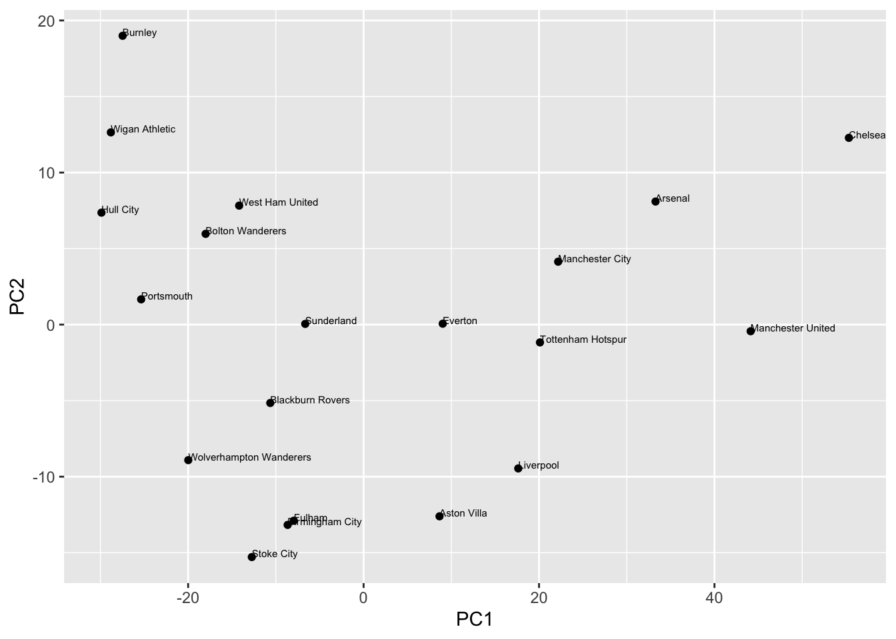
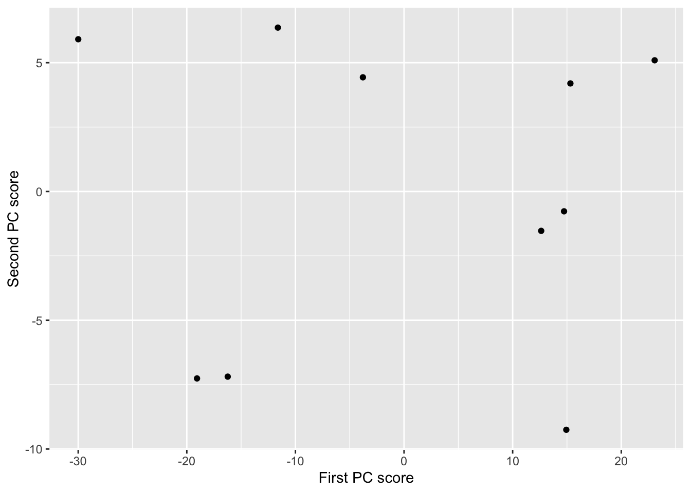

4.2 Properties of principal components
Let \(\boldsymbol x_1, \ldots, \boldsymbol x_n\) have sample mean \(\bar{\boldsymbol x}\) and sample covariance matrix \(\boldsymbol S\), with spectral decomposition \(\boldsymbol S=\boldsymbol Q\boldsymbol \Lambda\boldsymbol Q^\top\) where \(\boldsymbol Q=[\boldsymbol q_1, \ldots , \boldsymbol q_p]\) is orthogonal and \(\boldsymbol \Lambda=\text{diag}\{\lambda_1, \ldots , \lambda_p\}\). The transformed variables have some important properties. 0.2truein
Proposition 4.2 For \(j,k=1, \ldots , p\), the following results hold.
- \(\bar{y}_{+j} = n^{-1} \sum_{i=1}^n y_{ij}=n^{-1}\sum_{i=1}^n \boldsymbol q_j^\top (\boldsymbol x_i-\bar{\boldsymbol x})=0\);
- \(\boldsymbol q_j^\top \boldsymbol S\boldsymbol q_j = \lambda_j\);
- \(\boldsymbol q_j^\top \boldsymbol S\boldsymbol q_k = 0\) for \(j \neq k\);
- \(\boldsymbol q_1^\top \boldsymbol S\boldsymbol q_1 \geq \boldsymbol q_2^\top \boldsymbol S\boldsymbol q_2 \geq \ldots \geq \boldsymbol q_p^\top \boldsymbol S\boldsymbol q_p\geq 0\);
- \(\sum_{j=1}^p \boldsymbol q_j^\top \boldsymbol S\boldsymbol q_j = \sum_{j=1}^p \lambda_j = \text{tr}(\boldsymbol S)\);
- \(\prod_{j=1}^p \boldsymbol q_j^\top \boldsymbol S\boldsymbol q_j = \prod_{j=1}^p \lambda_j = |\boldsymbol S|\).
In words:
part 1. tells us that the sample mean of \(y_{1j}, \ldots , y_{nj}\) for each fixed \(j\) is \(0\);
part 2. tells us that, for each fixed \(j\), the sample variance of the \(y_{ij},\, i=1, \ldots , n\) is \(\lambda_j\);
part 3. states that the sample covariance of the pairs \((y_{ij}, y_{ik})\), \(i=1, \ldots , n\), is \(0\) if \(j \neq k\);
part 4. states that the sample variance of \(y_{ij}, \, i=1, \ldots , n\), is not less than the sample variance of \(y_{ik}, \, i=1, \ldots , n\), if \(j\leq k\);
part 5. states that the sum of the sample variances is equal to the trace of \(\boldsymbol S\);
and part 6. states that the product of the sample variances is equal to the determinant of \(\boldsymbol S\).
From these properties we say that a proportion \[\frac{\lambda_j}{\lambda_1 + \ldots + \lambda_p}\] of the variability in the sample is `explained’ by the \(j\)th PC.
For the G11PRB and G11STA data above, \[\frac{\lambda_1}{\lambda_1 + \lambda_2} = \frac{304.24}{304.24+33.16} = 0.90,\] so 90% of the variability in the sample is explained by the 1st PC.
```{Example} We can apply PCA to a football league table where \(W\), \(D\), \(L\) are the number of matches won, drawn and lost and \(F\) and \(A\) are the goals scored for and against. An extract of the table for a recent Premiership season is: FIX FIX
| Team | W | D | L | F | A |
|---|---|---|---|---|---|
| Chelsea | 27 | 5 | 6 | 103 | 32 |
| Manchester United | 27 | 4 | 7 | 86 | 28 |
| Arsenal | 23 | 6 | 9 | 83 | 41 |
| Tottenham Hotspur | 21 | 7 | 10 | 67 | 41 |
| Manchester City | 18 | 13 | 7 | 73 | 45 |
The sample mean vector is
\[\bar{\boldsymbol x} =\begin{pmatrix}14.2 \\9.6 \\14.2 \\52.6 \\52.6 \\\end{pmatrix}\]
and the sample covariance matrix is
\[\begin{equation} \boldsymbol S= \begin{pmatrix}39.4&-8.27&-31.1&116&-81.9 \\-8.27&8.14&0.13&-29.4&6.01 \\-31.1&0.13&31&-86.3&75.9 \\116&-29.4&-86.3&392&-209 \\-81.9&6.01&75.9&-209&231 \\\end{pmatrix} \tag{4.3} \end{equation}\]
The eigenvalues of \(\boldsymbol S\) are \[\boldsymbol \Lambda= \text{diag}\begin{pmatrix}631&96.7&8.83&2.44&-4.97e-14 \\\end{pmatrix}\]
Note that we have a zero eigenvalue because one of our variables is a linear combination of the other variables, \(L = 38 - W - D\). The corresponding eigenvectors are \[\boldsymbol Q= [\boldsymbol q_1 \ldots \boldsymbol q_5] =\begin{pmatrix}0.251&-0.0133&-0.116&0.768&0.577 \\-0.0477&-0.146&0.74&-0.309&0.577 \\-0.204&0.16&-0.624&-0.459&0.577 \\0.776&0.582&0.0674&-0.234&-2e-15 \\-0.539&0.784&0.213&0.222&1.83e-15 \\\end{pmatrix}\]
The proportion of variability explained by each of the PCs is: \[ \begin{pmatrix}0.854&0.131&0.012&0.0033&-6.73e-17 \\\end{pmatrix} \]
There is no point computing the scores for PC 5 because PC5 does not explain any of the variability in the data. Similarly, there is little value in computing the scores for PCs 3 & 4 because they only account for 1.5% of the variability in the data.
We can, therefore, choose to compute only the first two PC scores. We are reducing the dimension of our data set from \(p=5\) to \(p=2\) while still retaining 98.5% of the variability. The first PC is given by: \[\begin{align*} y_{i1} &= 0.25(W_i-\bar{W}) +-0.05(D_i-\bar{D}) +-0.2(L_i-\bar{L})\\ & \qquad +0.78(F_i-\bar{F}) +-0.54(A_i-\bar{A}), \end{align*}\] and similarly for PC 2.
The first five rows of our revised ``league table’’ are now| Team | PC1 | PC2 |
|---|---|---|
| Chelsea | 55.3 | 12.3 |
| Manchester United | 44.1 | -0.4 |
| Arsenal | 33.3 | 8.1 |
| Tottenham Hotspur | 20.1 | -1.2 |
| Manchester City | 22.2 | 4.1 |
Now that we have reduced the dimension to \(p=2\), we can visualise the differences between the teams.

We might interpret the PCs as follows. The first PC seems to measure overall performance. It rewards teams with 0.78 for every goal they score and 0.25 for every match they win, while penalising them by 0.54 for every goal they concede, 0.2 for every match they lose and 0.05 for every match they draw.
We could, therefore, rank teams by PC 1 and compare this with the rankings using 3 points for a win and 1 point for a draw. The rankings are the same for the top three teams but differ below that. Under our system Wigan would be relegated in place of Portsmouth.
The second PC has a strong negative loading for both goals for and against. A team with a large negative PC 2 score was, therefore, involved in matches with lots of goals. We could, therefore, interpret PC 2 as an ``entertainment’’ measure, ranking teams according to their involvement in high-scoring games.
The above example raises the question of how many PCs should we use in practice. If we reduce the dimension to \(p=1\) then we can rank observations and analyse our new variable with univariate statistics. If we reduce the dimension to \(p=2\) then it is still easy to visualise the data. However, reducing the dimension to \(p=1\) or \(p=2\) may involve losing lots of information and a sensible answer should depend on the objectives of the analysis and the data itself.
One tool for looking at the contributions of each PC is to look at the scree graph which plots the percentage of variance explained by PC \(j\) against \(j\). The scree graph for the football example is:

Possible methods for choosing the number of PCs include:
- retain enough PCs to explain, say, 90% of the total variation;
- retain PCs where the eigenvalue is above the average.
For the football example, the first method would retain 2 PCs whereas the second method would only retain 1 PC.
```